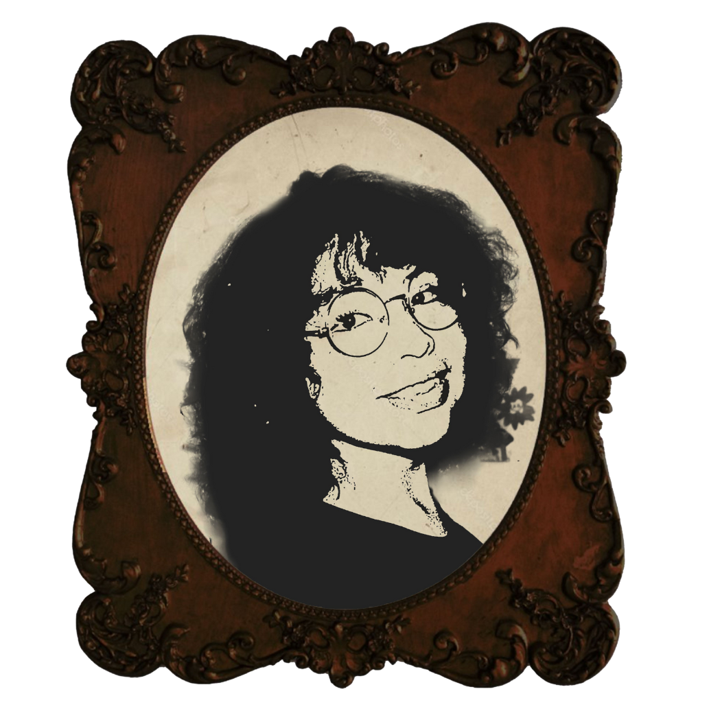

eymi alanis g. zelada
Soy Eymi Alanis, diseñadora gráfica. Desde niña me intrigaba cómo un color podía cambiarlo todo; pasaba horas jugando con el lápiz y el papel para después pasarlo al Word, Paint y PowerPoint, creando sin darme cuenta. Hoy sigo con esa misma curiosidad, mezclando ilustración, fotografía y redes para contar historias que conecten. Para mí, el diseño no es solo estética: es emoción, es darle forma a una idea para que alguien más la sienta.